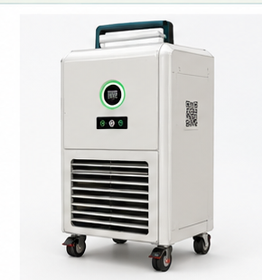

01
Mobile, compact body
Move the purifier into position using its top handle. Lock the caster wheels with the foot brakes before operation.
Welcome to MESSAIR — a mobile hybrid air purifier designed for the demanding air conditions of hostel dining rooms, where cooking grease, fine particles, steam and food odours mix.

A waist-height, mobile purifier concept designed specifically for hostel messes and institutional dining spaces.
Move the purifier into position using its top handle. Lock the caster wheels with the foot brakes before operation.
Front intake louvers draw in air close to the floor, where heavier food aerosols and dust can collect. Keep the grille unobstructed.
The curved upper outlet is designed to guide treated air along the ceiling, helping avoid a strong direct draft at table level.
MESSAIR combines physical separation, electrostatic collection, humidity conditioning and odour treatment.
A high-speed vortex separates heavier grease droplets and food dust by centrifugal force. The separated material falls into the lower sump.
Ionising wires charge fine smoke particles. Hydrophobic collector plates attract and capture the charged particles.
A PTC heater gently warms the air by a design target of around 2–4 °C to help reduce moisture before the carbon bed.
A 254 nm UV-C / TiO₂ photocatalytic module is paired with activated carbon to target odour-causing compounds and residual VOCs.
The front is intended for everyday user interaction. Rear service controls are reserved for trained mess or maintenance staff.
The circular indicator gives a quick visual status cue. Use the AQI screen reading for the displayed air-quality value.
Use the designated front power control to switch the purifier on or off. Do not unplug by pulling the cable.
Displays the air-quality information and device status. The screen is intended to be tamper-resistant during busy meal periods.
Use the handle to guide the unit while moving it. Do not lift or carry the purifier by the handle unless the final build is rated for lifting.
The lower drawer collects separated grease. It is designed to slide out for quick emptying without opening the main body.
Rear features include the touch-wash control, scent cartridge access, cord hooks and service access. Keep these areas for staff use.
The front display helps users understand the reported air-quality condition at a glance.
The colour indicator is a quick visual cue. The number shown is an example, not a live measurement. Exact numeric bands depend on the AQI standard and sensor calibration selected for the final product.
Follow this quick routine when positioning the purifier in a dining hall.
Use the top handle to guide the unit to its designated location. Keep it clear of dining tables, walkways and kitchen equipment.
Press the caster foot brakes so the purifier stays stationary while running.
Make sure the front intake louvers and upper outlet are not blocked by walls, bags, curtains or stored items.
Use the front power button. Allow the air-quality sensor time to settle, then check the AQI screen and status ring.
Route the power cord away from walkways. Use the rear cord hooks when the purifier is parked or stored.
Switch off using the front control. Follow the staff maintenance routine for the oil drawer and any scheduled cleaning cycle.
MESSAIR is designed to reduce routine consumable replacement through reusable collection components and an off-peak cleaning concept.
1. Switch off the purifier.
2. Pull the lower drawer out slowly using its handle.
3. Empty collected grease into the designated waste container.
4. Wipe the drawer clean and dry it completely.
5. Slide it fully back into place before restarting.
The concept includes an off-peak hot-water backwash to rinse collected grease from the hydrophobic collector plates. The wash function and rear touch control should be operated only under the approved staff procedure for the final prototype.
Switch off and unplug before wiping the outer panels. Use a soft cloth. Keep water away from the display, controls, cable entry and electrical openings. Do not poke objects through the louvers.
If the optional scent-vapour cartridge is installed, replacement should be handled by authorised staff using the specified cartridge. Do not pour fragrance liquid into the purifier.
MESSAIR combines moving airflow components, electrical controls, an electrostatic collector and a UV-C treatment module.
Do not operate with a damaged cable or plug. Disconnect power before cleaning the exterior or handling the oil drawer.
High-voltage ESP parts, UV-C components, heater and fan are for authorised service personnel only. Never bypass covers or interlocks.
Do not hose down the purifier or pour water into it. Allow service personnel to manage the hot-water wash and heater components.
Key design targets from the MESSAIR concept presentation.
| Product | MESSAIR — mobile cyclonic-electrostatic hybrid air purifier |
|---|---|
| Intended setting | Hostel messes and institutional dining rooms |
| Form factor | Waist-height compact mobile unit |
| Target airflow | 1200+ m³/h CADR (design target; verify by testing) |
| Primary stages | Cyclone separation, wet ESP, PTC dehumidification, UV-C / TiO₂ and activated carbon |
| Grease handling | Bottom sump and front slide-out oil drawer |
| Maintenance concept | Off-peak automated hot-water backwash for ESP collector plates |
| Mobility | Top handle, caster wheels and foot brakes |
Check that the sensor opening is not blocked. Give the sensor time to take a reading. If it remains unchanged, report it to the maintenance team.
Check that the intake louvers and outlet are clear and that the oil drawer is fully seated. Do not open the internal fan or filter compartments yourself.
Switch off the unit. Check for an obstruction or misalignment. Do not force the drawer; ask staff to inspect the slide mechanism.
Check the external power connection if safe to do so. If the problem continues, switch off at the supply and contact authorised maintenance staff.
Follow the service interval and cleaning-cycle instructions established for the final prototype. Internal ESP servicing must be performed by trained personnel.